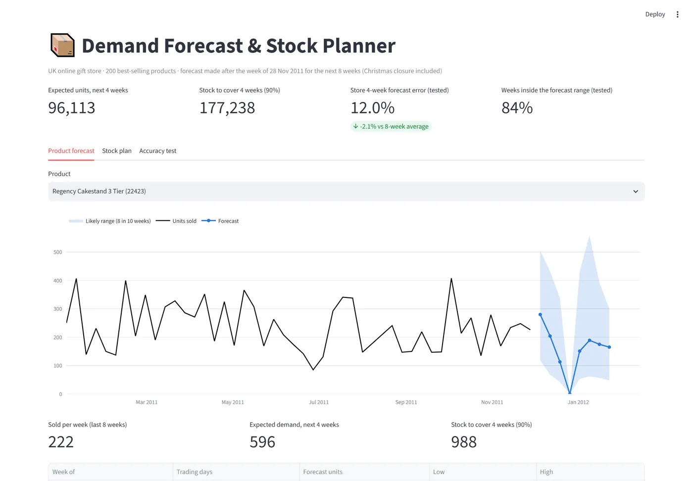
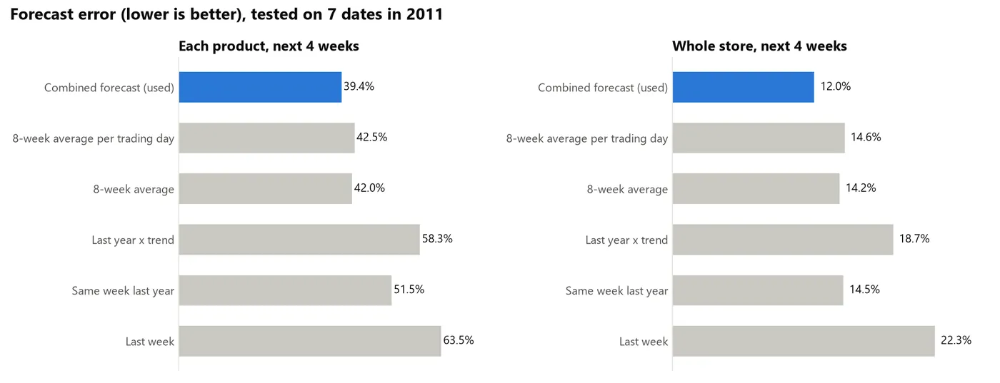
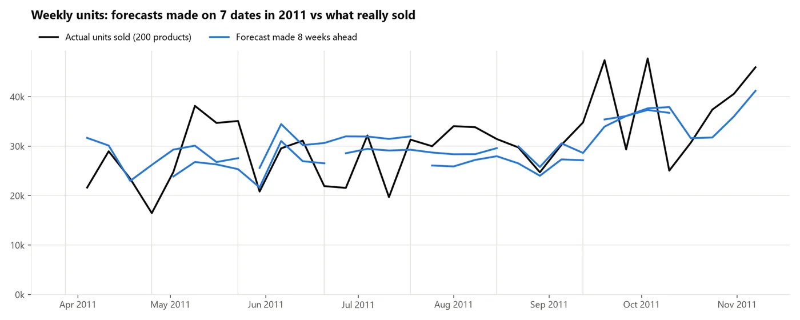
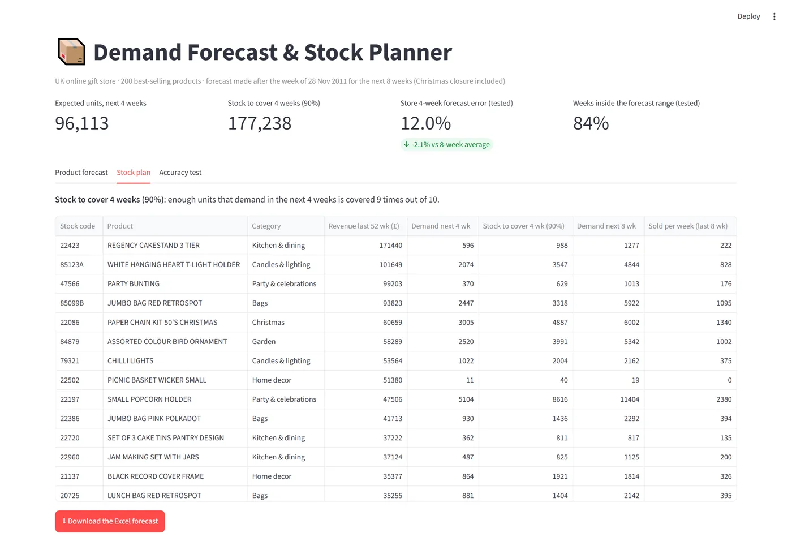

Machine learning · Forecasting
Demand forecasting and stock planning for 200 products
Weekly demand forecasts with a low-high range for the 200 best-selling products of an online store, and a stock plan that covers the next 4 weeks 9 times out of 10.
less error than the best simple method
test dates, 9,694 product-weeks checked
of real weeks inside the forecast range

The problem
An online store has to decide every week how much to order for each product. Too little means lost sales; too much means cash stuck on shelves.
Real sales data from a UK online gift store (UCI Online Retail II, 1.07M order lines, Dec 2009 to Dec 2011), with wholesale customers whose large orders make single weeks hard to predict.
What I built
- Weekly demand per product for the 200 best sellers, with the store calendar (trading days, Christmas closure, Easter).
- Features that matter: recent sales per trading day, the same weeks last year, category and store seasonality, price changes and weeks to Christmas.
- LightGBM quantile models give a low, middle and high forecast for each of the next 8 weeks.
- Stock plan: the stock that covers the next 4 weeks of demand 9 times out of 10.
- Delivered as an Excel workbook (stock plan, weekly forecast, ranges) and a Streamlit app.
The result
The forecast was made on 7 dates in 2011, each time using only the weeks before that date, and compared with what really sold. Error is WAPE (lower is better):
| Method | Each product, 4 weeks | Whole store, 4 weeks |
|---|---|---|
| My forecast | 39.4% | 12.0% |
| 8-week average | 42.0% | 14.2% |
| Same week last year | 51.5% | 14.5% |
| Last year x trend | 58.3% | 18.7% |
| Last week | 63.5% | 22.3% |
That is 15% less error than the best simple method on whole-store demand. The ranges are honest too: 84% of real weeks fell inside the low-high range (target 80%).
Screens


